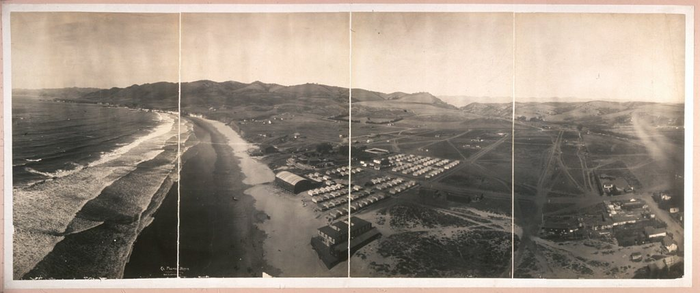
The History of Oceano Dunes
Horse and buggy. Model Ts. Jeeps. Dune buggies. Quads. Now electric UTVs. Different machines, same stretch of coast, for well over a hundred years. Here's how it happened, and why it's still legal today.
The Skinny Bear That Named a Lake
Gaspar de Portolá's overland expedition, the first Spanish land party to travel this stretch of California, crossed these dunes in 1769. Local lore says his men killed and ate a starving bear near the lake at the south end of today's park; several of them fell sick that night. They named the spot Oso Flaco, Spanish for "skinny bear," and the name stuck. Oso Flaco Lake still carries it today.
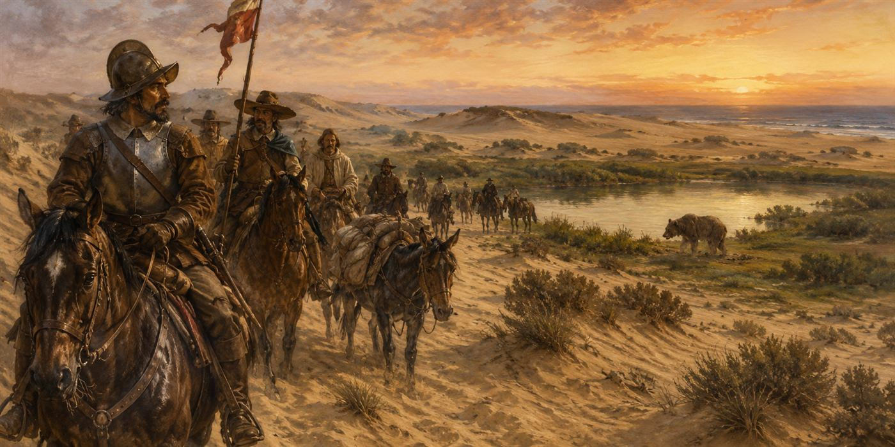
Wheels Before the Automobile
For thousands of years before any of this, the Northern Chumash people used this stretch of coast, drawing on its dunes, wetlands, and tide life.
When settlers arrived, they found something unusual: unlike most California beaches, the hard-packed sand here was firm enough to drive a wagon on. Horse-drawn buggies were using this beach as a road decades before the first engine ever turned over on it.
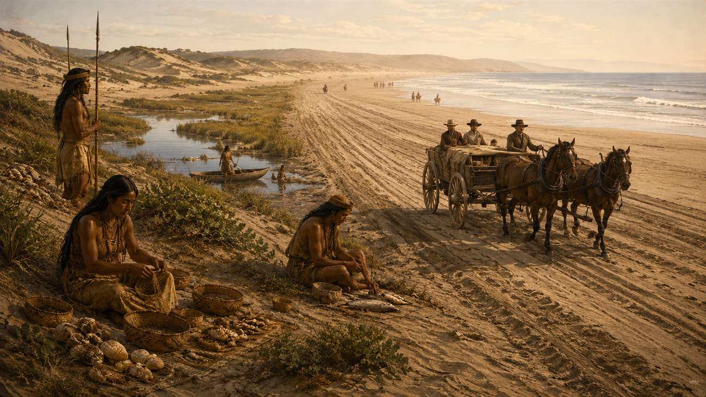
The Automobile Finds the Beach
Around 1905, the automobile showed up, and the beach never went back to horses only.
The same flat, firm sand that worked for buggies turned out to be perfect for cars. Early tourism brochures for the area listed "automobiling on the sand" as a top attraction, and the beach hosted straight-line speed trials, the same idea as Daytona Beach in Florida, decades before NASCAR ever raced there. A dance pavilion went up on what's still called Pavilion Hill, and the beach became a destination as much for the driving as for anything else.
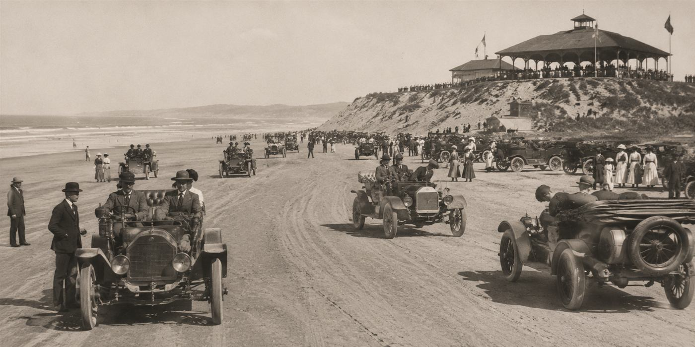
The Dunites
Not everyone who came to the dunes came for the driving.
Starting in the 1920s, a loose colony of artists, mystics, and Depression-era dropouts built a scattering of driftwood cabins in the dunes. An astrologer named Gavin Arthur organized the group and named the settlement Moy Mell, Gaelic for "pastures of honey." Visitors included John Steinbeck and Upton Sinclair, and the colony published its own literary magazine, The Dune Forum. World War II ended it: the Coast Guard used the cabins for training, the Depression that had pushed people into the dunes was over, and the Dunites never regrouped. Moy Mell sits somewhere under the sand of today's SVRA.
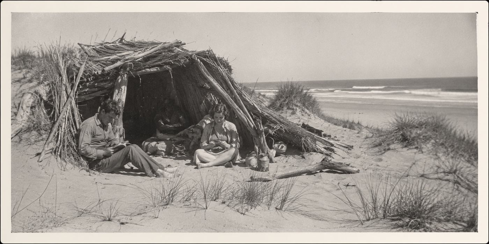
Born to Run: Dune Buggy Culture
After the war, surplus Jeeps came home with the soldiers who'd driven them, and off-roading caught on as a hobby up and down this coast.
Families started "duning" as a weekend tradition, camping right on the beach with nothing more than tents and slide-in campers. By the early 1970s it was a full-blown scene: a Life Magazine photo from July 4, 1971 famously showed something like 100,000 dune buggy fans packed onto the beach at once. Pismo Beach, the town nearest the dunes, is still known as the birthplace of dune buggy culture.
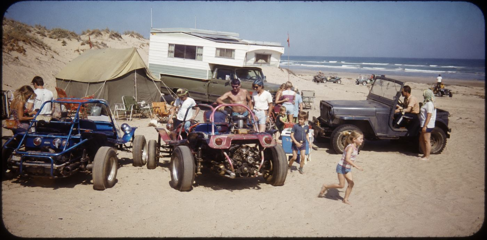
From Open Beach to State Park
All that driving was happening on open beach, not a managed park. That changed in 1974.
Oceano Dunes became a California state park that year, covering roughly 3,600 acres. In 1982, State Parks' Off-Highway Motor Vehicle Recreation Division took over active management and built the first entrance kiosks and fencing, creating what's considered California's first official off-highway vehicle park.
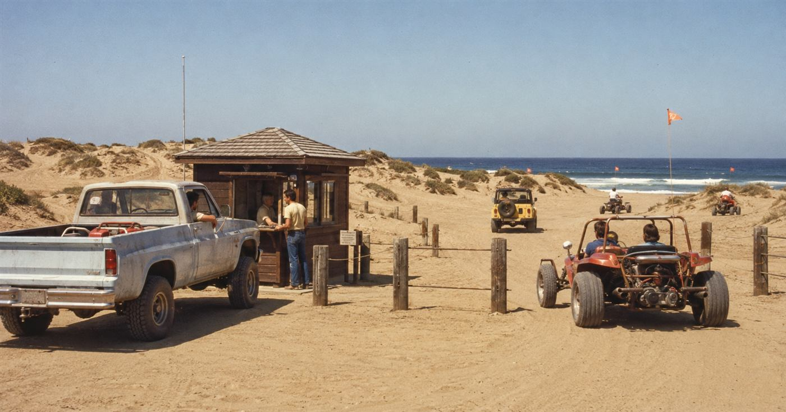
A Shrinking Footprint
The riding area has been shrinking ever since it was formalized.
Of the roughly 3,600 acres in the park, less than 1,500 are open to OHVs today. The rest is set aside for habitat, including seasonal nesting closures for the western snowy plover and California least tern. Dust and air quality became the next front: nearby Nipomo Mesa residents and regulators raised concerns that blowing sand from the open riding area was affecting local air quality, a fight that would eventually end up in court.
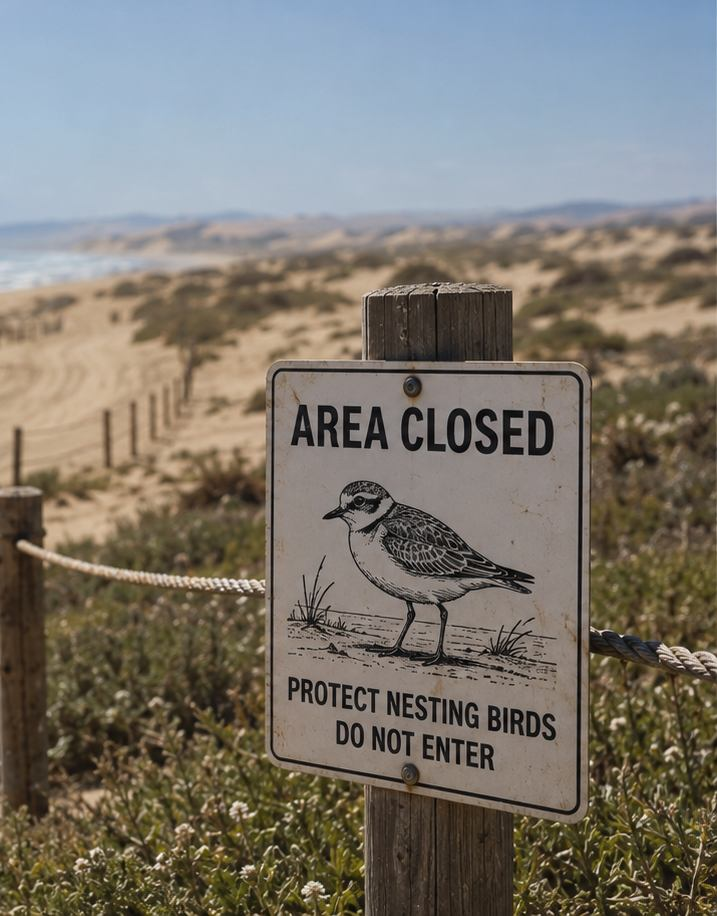
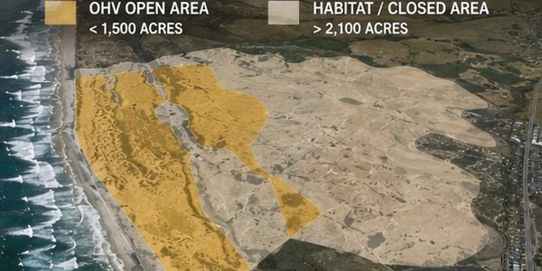
The Fight for the Future
In 2019, California Coastal Commission staff recommended phasing out OHV riding at Oceano Dunes entirely.
The full Commission rejected that recommendation 8 to 2, but reversed course in February 2021, voting to eliminate motorized access within three years. Friends of Oceano Dunes and the Specialty Equipment Market Association sued, arguing the Commission had overstepped its authority under San Luis Obispo County's existing coastal plan. The county Superior Court agreed. California's Second District Court of Appeal upheld that ruling in March 2025, and on July 9, 2025, the California Supreme Court declined to hear any further appeal, closing the case for good. Off-highway vehicle recreation at Oceano Dunes remains legal.
Still the Last Beach You Can Drive On
Oceano Dunes is the only state park left in California where you can legally drive a vehicle on the beach.
The machines keep changing. Horse and buggy gave way to the Model T, the Model T to the Jeep, the Jeep to the dune buggy, and gas engines are increasingly sharing the sand with electric UTVs and e-bikes. What hasn't changed is that people have been doing this here, legally, for well over a century.
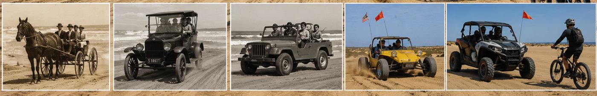
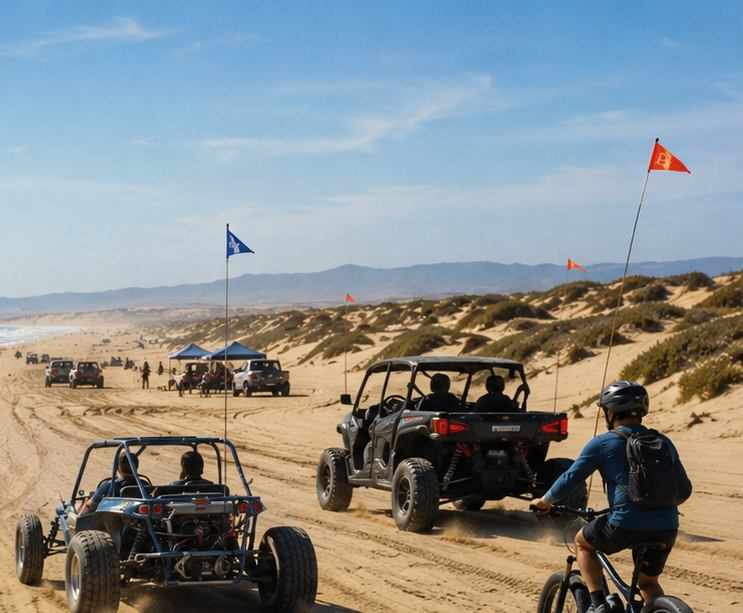
- Thousands of years ago: the Northern Chumash inhabit and manage this stretch of coast.
- 1769: the Portolá expedition passes through and names Oso Flaco Lake.
- 1905: automobiles start driving the beach; speed trials begin.
- 1920s to 1940s: the Dunites art colony lives at Moy Mell.
- 1950s to 1970s: post-war Jeep culture grows into dune buggy culture; Pismo becomes its birthplace.
- 1974: Oceano Dunes becomes a California state park.
- 1982: State Parks begins active SVRA management; the first kiosks and fencing go up.
- 2021: the California Coastal Commission votes to phase out OHV access.
- 2025: the Court of Appeal, then the California Supreme Court, affirm that OHV recreation at Oceano Dunes is legal.